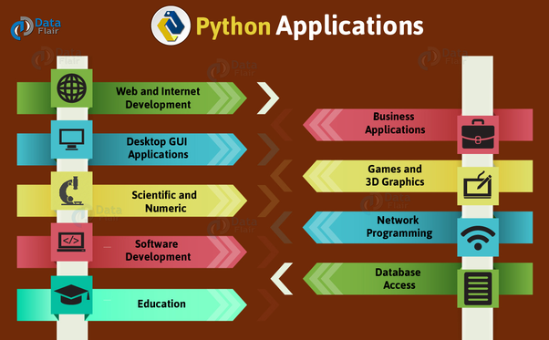

What can Python do?
Python has a large number of capabilites when it comes to the programs it can write. It has the same power as C/C++ however, Python is not usually the main part of a program. It's mostly used as a scripting language. Here is a list of the most popular websites/applications that have incoporated Python in their programs: 
- - Youtube
- - Dropox
- - Goolge
- - Pintrest
- - Spotify
There are several different frameworks for Python such as Django, Flask, and Pyriamid. You can use Python for Web Deveolpment, Data Analysis, Machine Learning, Computer Vision, Game Development, Web Scraping, and Writing Scripts. There are more things you can do with Python other than the ways listed below. Watch the video below to learn more about what Python can do.